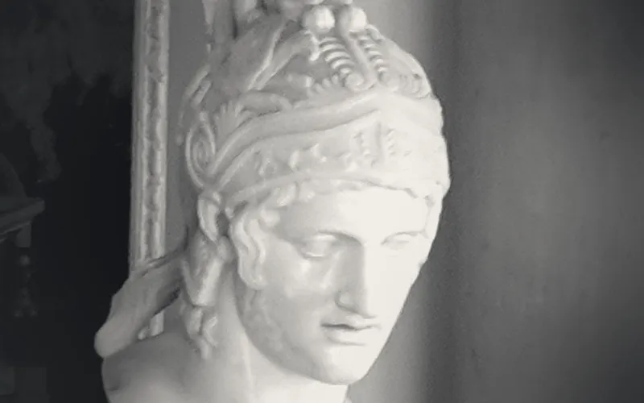
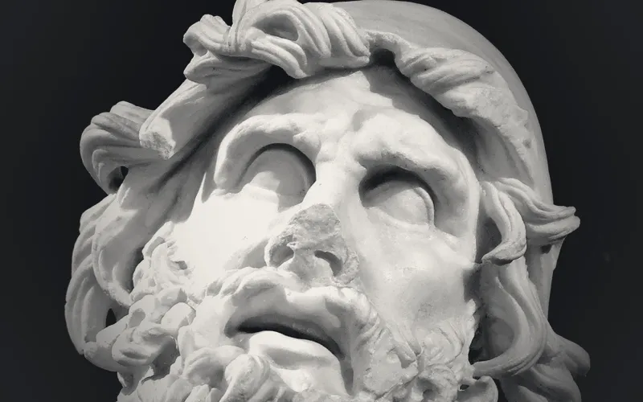
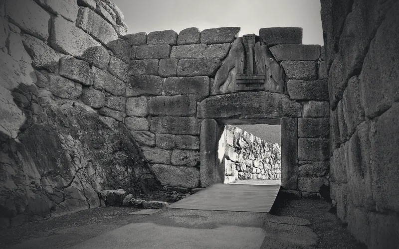

O rapto de Helena
Páris, príncipe de Troia, levou Helena, esposa do rei Menelau, de Esparta. Agamêmnon, irmão de Menelau, reuniu os reis gregos e mais de mil navios para buscá-la.
Apolodoro, Epítome LUGAR
LUGAR
Τροία
Cidade do rei Príamo, na costa da atual Turquia. Os gregos a cercaram por dez anos para recuperar Helena. As ruínas ficam na colina de Hisarlik.
Durante dez anos, essa guerra me deu muito trabalho. Chegava tanta alma ao portão que eu mal tinha tempo de abanar o rabo.
Páris, príncipe de Troia, levou Helena, esposa do rei Menelau, de Esparta. Agamêmnon, irmão de Menelau, reuniu os reis gregos e mais de mil navios para buscá-la.
Apolodoro, EpítomeHeitor, o maior guerreiro troiano, matou Pátroclo. Aquiles o venceu diante das muralhas, e o velho Príamo foi sozinho ao acampamento grego pedir o corpo do filho.
Conhecer Aquiles →Os gregos fingiram partir e deixaram um cavalo de madeira na praia. Os troianos o puseram para dentro. À noite, os soldados escondidos abriram os portões.
Virgílio, Eneida II“Chegará o dia em que a sagrada Ílion será destruída, e Príamo, e o povo de Príamo.”
Heitor, em Homero, Ilíada, canto VI (tradução livre)

Ἀχιλλεύς
Filho de Peleu e Tétis, o maior guerreiro grego em Troia.

Ὀδυσσεύς
Rei de Ítaca. Levou dez anos para voltar para casa depois da guerra.

Μυκῆναι
Cidade de Agamêmnon, líder dos gregos na Guerra de Troia.